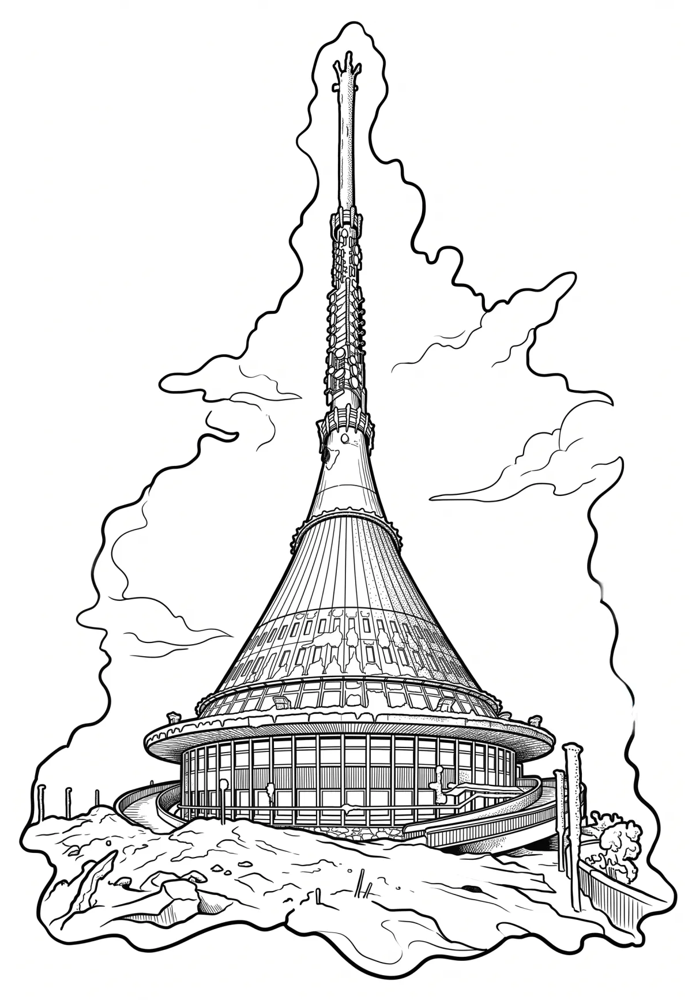

Vysílač Ještěd
Liberecký kraj · 1012 m n. m.

technická památka · #092
Hotel a televizní vysílač na Ještědu je stavba ve tvaru jednodílného rotačního hyperboloidu, postavená v letech 1966 až 1973 na vrcholu hory Ještěd u Liberce. Je vysoká téměř 100 metrů s kruhovým půdorysem o průměru 33 metrů. Autorem architektonického návrhu je architekt Karel Hubáček, statický projekt zpracoval Zdeněk Patrman a Zdeněk Zachař, výbavu vnitřních prostor navrhl Otakar Binar.